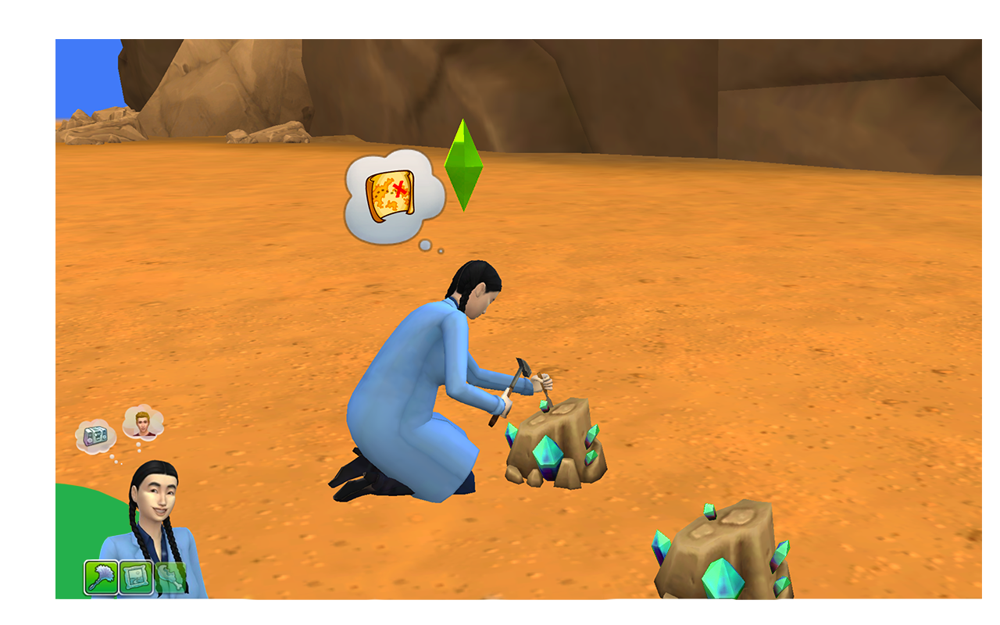

Salary: The starting level for the scientist career is a lab technician with a salary of §24 an hour or §216 a day (10am to 7pm). With a schedule of Monday to Friday, the weekly payday for this job is §1080. I got promoted to the 4th level, and now I’m a serum sequencer. I get paid §48 a day or §432 a day. Variation: There are a lot more things you can do as a scientist than I thought. I have only stayed in the same place, but the work space has a lot to do. I can go outside and take care or take samples of plants, I can dig amongst rocks, go fishing at the nearby lake, and even collect aliens from this well thing, though I still haven’t seen the aliens I’ve collected. Inside, there are a lot of machines that look like they belong in a mad scientist’s lab. I can analyze samples, make serums, brainstorm, build machines, and more. I’ve got to say though I find most of the indoor jobs Challenge: I actually was having trouble finding where everything was because I guess I’m not used to all these “science” machines that are in the lab. But the real challenge that is an actual part of the job is collecting materials. One shift we had no materials so it was my job to collect some, either by getting a coworker to give me a crystal or metal, fishing, digging at rocks, or collecting plants from outside. I had a lot of fun just building my collection of materials. I also can analyze all the samples I collect and this makes me want to collect even more. I also have to be good at working with people because many of my tasks involve asking for things, like metals, crystals, and DNA samples. If I’m not close enough with a coworker they will not share what they have.
